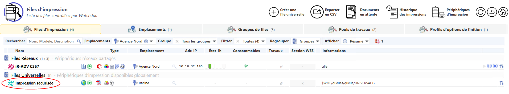
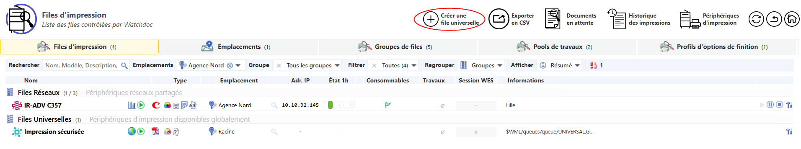
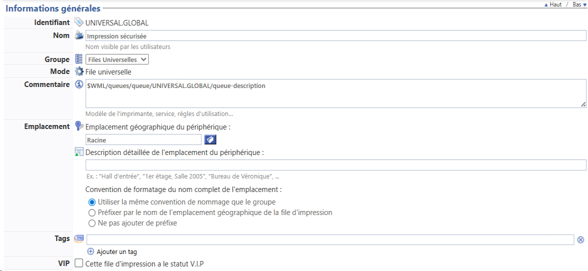
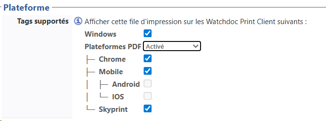
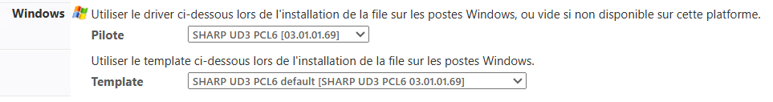

Principe
Une file universelle
-
est une file logique créée exclusivement pour la fonction Watchdoc Print Client (WPC).
Elle permet aux utilisateurs de lance une impression à l'aide des outils WPC for Windows, WPC for Android ou Skyprint, puis de le débloquer physiquement sur l'un des périphériques d'impression compatibles ; -
est créée automatiquement et nommée par défaut "Impression Universelle" lors de l'installation de Watchdoc ;
-
ne peut pas être supprimée ;
-
utilise le spouleur Doxense (custom spooler) et n'utilise pas le spouleur MS Windows ;
-
est préconfigurée pour rediriger les fichiers de spool vers le pool d'impression global (#global) sans utiliser le spouleur MS Windows ;
-
doit être associée à un pilote d'impression de type 3 pour fonctionner (lors du chargement d'un pilote dans WSC, une file universelle peut y être associée) ;
-
est associée par défaut à l'emplacement
 (anciennement "Géosites" dans les versions antérieures à la V6). Dans Watchdoc, un emplacement est un libellé appartenant à une liste structurée de sites géographiques permettant de localiser physiquement des éléments de configuration du parc d'impression (périphériques d'impression, serveurs, files, etc.).
La liste des emplacements est administrable depuis l'interface d'administration de Watchdoc.
Les emplacements sont nécessaires à la fonctionnalité Watchdoc Print Client. Monde, mais peut-être associée à tout autre emplacement de la hiérarchie ;
(anciennement "Géosites" dans les versions antérieures à la V6). Dans Watchdoc, un emplacement est un libellé appartenant à une liste structurée de sites géographiques permettant de localiser physiquement des éléments de configuration du parc d'impression (périphériques d'impression, serveurs, files, etc.).
La liste des emplacements est administrable depuis l'interface d'administration de Watchdoc.
Les emplacements sont nécessaires à la fonctionnalité Watchdoc Print Client. Monde, mais peut-être associée à tout autre emplacement de la hiérarchie ;
Une file universelle n’est pas
-
une file d’impression Windows : elle n'existe pas sur le serveur.
En toute logique, si vous disposez de 4 emplacements équipés chacun d'un serveur d'impression (ou d'un domaine), vous déclarez 4 files universelles auxquelles sont associés les périphériques d'impression dédiés.
Accéder à la file
-
Accédez à l'interface d'administration de Watchdoc en tant qu'administrateur.
-
Depuis le Menu principal, section Exploitation, cliquez sur Files d'impression, groupes de files & pools :

-
Dans la liste Files d'impression, cliquez sur votre file parmi les Files Universelles pour la sélectionner. La file universelle installée par défaut se nomme Impression sécurisée :

-
Si vous souhaitez créer une autre file universelle, cliquez sur le bouton Créer une file universelle située au-dessus de la liste des files :

{kind=link}
{kind=link}
Configurer la file
En bref
Pour configurer une file universelle, vous pouvez vous contenter de compléter les champs suivants :
-
Informations générales > identifiant
-
Informations générales > nom
-
Informations générales > emplacement
-
Redirections > Pool de travaux
-
Plateforme > Tags supportés
Section Informations générales
Complétez les zones suivantes :
-
Identifiant : un identifiant est généré automatiquement par défaut. Vous pouvez le modifier : il peut contenir jusqu'à 64 caractères alphabétiques et chiffres, ainsi que le tiret bas (_) en guise de séparateur.
-
Nom : le nom attribué à la file d'impression s'affiche dans l'interface de déblocage (WES) et dans les mails de notification. Il peut être utile d'en préciser le modèle et la localisation.
-
Groupe : associez la file à un groupe prédéfini :
-
Files externes : groupe conçu pour rassembler les files réseaux non gérées par le serveur (par exemple, sur un serveur master, files gérées par les serveurs slaves) ;
-
Files personnelles : groupe conçu pour rassembler les files associées à des périphériques USB gérés par WPC for Windows (en remplacement des Agents locaux avant Watchdoc v. 5.4.1) ;
-
Files Réseaux : files physiques détectables par Watchdoc sur le réseau ;
-
Files Universelles : files dédiées à l'utilisation de WPC (for Android, for Chrome, for IOS, for Windows et Skyprint) ;
-
Files virtuelles : files qui collectent les travaux d'impression en vue de les envoyer vers une file réseau (périphérique d'impression) choisie par l'utilisateur lors du déblocage (impression à la demande).
-
-
Emplacement
(anciennement "Géosites" dans les versions antérieures à la V6). Dans Watchdoc, un emplacement est un libellé appartenant à une liste structurée de sites géographiques permettant de localiser physiquement des éléments de configuration du parc d'impression (périphériques d'impression, serveurs, files, etc.).
La liste des emplacements est administrable depuis l'interface d'administration de Watchdoc.
Les emplacements sont nécessaires à la fonctionnalité Watchdoc Print Client. , dans l'arborescence des emplacements, sélectionnez celui auquel la file universelle est associée. Si nécessaire, apportez des précisions relatives à l'emplacement.dans le champ Description détaillée.-
Convention de formatage du nom complet : indiquez la manière dont Watchdoc crée le nom complet de la file
-
convention de nommage du groupe : utilisez la convention définie au niveau du groupe de files
-
préfixer : le nom complet de l'emplacement est composé par le préfixe de l'emplacement qui précède;
-
ne pas ajouter de préfixe : le nom de l'emplacement n'est pas complétée.
-
-
-
Tags : si nécessaire, saisissez des mots-clés internes permettant de qualifier la file. Utilisez l'espace en guise de séparateur entre deux mots-clés et le tiret bas (_) en guise de séparateur pour un mot-clé composé. Ces mots-clés servent à la conception de filtres et sont exploités pour affiner les rapports personnalisés pour faciliter l'exploitation des files.
Certains tags sont utilisés par WPC for Windows pour déclencher un comportement particulier de la file :-
remote : installe la file d'impression avec le PortMonitor WPC pour imprimer au format RAW sur le port 9100 du périphérique d'impression plutôt que d'envoyer la demande d'impression au serveur. Ce qui revient à activer l'impression directe avec WPC for Windows ;
-
tcpip : permet d'installer la file d'impression avec son port d'impression TCPIP de manière à laisser MS Windows gérer l'impression, sans solliciter Watchdoc (permet l'impression directe par Windows).
-
forceinstall : permet d'installer une file d'impression physique automatiquement sur le poste client.
Lorsqu'une file est installée sans ces tags, le périphérique d'impression est installé avec le PortMonitor WPC, pour envoyer l'impression à Watchdoc via la PrintAPI.
-
-
VIP : cochez cette case pour attribuer un statut spécifique à la file d'impression paramétrée. La file est alors caractérisée par une icone spécifique
 et ce critère constitue un filtre de sélection.
et ce critère constitue un filtre de sélection. -
Global : si la configuration concerne le serveur maître d'un domaine (configuration maître/esclaves), cochez la case Global pour répliquer la file sur tous les serveurs du domaine ;

{kind=link}
Section Restrictions
-
Expiration : le paramètre définit le traitement appliqué aux travaux d'impression au-delà de la durée de vie indiquée (dans le champ suivant) :
-
Utiliser la configuration par défaut du groupe : le traitement appliqué est le même que celui qui a été défini pour le Groupe de files (si la file appartient à un groupe). Dans ce cas, c'est aussi la durée de vie définie pour le groupe qui s'applique à la file.
-
Supprimer automatiquement le document : le document est supprimé au-delà de la durée de vie ;
-
Archiver automatiquement le document : le document est archivé au terme de la durée de vie définie. Archivé, le document n'est plus en attente d'impression, mais reste accessible dans l'interface web de l’utilisateur (qui peut alors relancer l'impression).
L'archivage est utile en cas de dysfonctionnement puisqu'il offre la possibilité d'analyser un document ayant posé problème.
Il peut également être utile d'archiver les demandes d'impressions issues d'applications métiers spécifiques pour lesquelles la génération d'impression est difficile. Notez cependant que l'archivage nécessite un espace de stockage important sur le serveur qui héberge Watchdoc. -
Débloquer automatiquement le document : le document est imprimé au terme de la durée de vie, sans validation de l'utilisateur. Ce paramètre n'est utilisé qu'en mode Validation
Internet Message Access Protocol est un protocole qui permet d'accéder à ses courriers électroniques directement sur les serveurs de messagerie.
Son fonctionnement est donc à l'opposé de POP qui, lui, récupère les messages (depuis le poste de travail) et les stocke localement via un logiciel spécialisé (par défaut, les clients de ce dernier protocole suppriment sur le serveur les messages récupérés). L'évolution des différentes versions d'IMAP (IMAP 4) lui permettent également, aujourd'hui, de récupérer les messages localement.
Le fait que les messages soient archivés sur le serveur fait que l'utilisateur peut y accéder depuis n'importe où sur le réseau et que l'administrateur peut facilement faire des copies de sauvegarde.
(Source : wikipedia).
N.B. : en cas de déblocage automatique, la confidentialité des impressions n'est pas garantie, l'utilisateur n'étant pas forcément à proximité du périphérique sur lequel est imprimé le document. -
Renouveler le délai d'expiration : optez pour ce choix afin de renouveler le délai d'expiration une fois que la durée de vie définie est expirée.
-
-
Durée de vie (durée de rétention) : indiquez en secondes, minutes, heures et jours, le temps durant lequel un travail reste dans la file tant qu'il n'est pas débloqué par l'utilisateur. Si vous ne remplissez pas ce champ, la durée de vie fixée à 8h par défaut.
Au-delà de la durée de vie précisée, le traitement défini en paramètre Expiration est appliqué.
N.B. : si la file appartient à un groupe, c'est la durée définie dans le groupe qui est appliquée. Ceci afin d'éviter des erreurs liées à la coexistence de deux durées de vie différentes (groupe et file) pour une même file.
Section Contacts
Les informations saisies dans cette section sont affichées dans l'interface d'administration et l'interface web d'utilisation de l'outil. Elles permettent d'orienter l'utilisateur vers le référent Watchdoc en mesure de les dépanner en cas de problème ou de question sur le périphérique contrôlé par Watchdoc :
- Responsable : saisissez son nom (et prénom pour plus de précision) ;
-
E-mail : saisissez son adresse mail ;
-
Téléphone : saisissez son numéro de téléphone (sous forme de chiffres) ;
-
Message : fournissez toute information complémentaire pouvant aider l'utilisateur qui souhaite établir un contact avec le responsable (horaires de disponibilité, jours de fermeture, information sur la localisation physique du bureau du responsable, procédure spécifique à suivre, etc.).

Section Redirections
En cas d'indisponibilité d'une file physique (périphérique d'impression), les travaux ne peuvent être imprimés. Pour éviter aux utilisateurs d'attendre le dépannage du périphérique, Watchdoc propose d'envoyer le travail d'impression vers d'autres périphériques du parc.
La redirection des travaux d'une file vers une autre file n'est possible qu'entre files compatibles. Pour permettre la redirection, il faut donc avoir indiqué préalablement à Watchdoc les compatibilités entre files (notamment en matière de pilotes lorsque les périphériques d'impression sont de marques différentes).
.
Les files (virtuelles et physiques) compatibles peuvent être associées dans un "Pool de travaux" : ainsi, lorsqu'une file (périphérique) est indisponible, toutes les autres files du pool peuvent être sollicitées.
Watchdoc contient deux pools par défaut pouvant répondre à la plupart des cas d'usage :
-
#global
-
#local
Outre ces pools par défaut, vous pouvez créer autant de pools que nécessaire (cf. Créer un pool).
Section Plateforme
-
Complétez la section Plateforme :
Cette section permet de préciser les plateformes WPC à partir desquelles la file peut être utilisée : WPC for Android, for Chrome, for IOS, for Windows et /ou Skyprint. Cochez la ou les cases correspondant aux plateformes sur lesquelles la file est proposée :Windows : la file est proposée sur WPC for Windows ;Plateformes PDF : inclut tous les WPC traitant des fichiers au format .pdf : for Chrome, for Android, for IOS et Skyprint. Activé : la file est proposée sur toutes les plateformes PDF ; Désactivé : la file n'est pas proposée sur les plateformes PDF (aucun WPC PDF ne peut être sélectionné) ; Auto-détection : Watchdoc examine les capacités du périphérique pour proposer ou ne pas proposer la file ; Mobile : la file est proposée sur les WPC mobiles : for Android et IOS ; Android : la file est proposée sur WPC for Android ; IOS : la file est proposée sur WPC for IOS ; Skyprint : la file est proposée sur Skyprint.
N.B. : notez que si la file n'est associée à aucun pilote d'impression, elle n'est pas proposée à l'utilisateur.
{kind=link}
-
Si le tag Windows est coché, complétez les paramètres associés :
-
pilote : sélectionnez le pilote (préalablement installé sur WSC) que vous voulez associer à cette file . Note : vous ne pouvez pas créer une file universelle sans pilote associé ;
-
template : le template (modèle de configuration d'une file d'impression) préalablement associé au pilote dans WSC :

Section Notifications
-
Destinataires : saisissez les adresses e-mail de référents habilités à intervenir en cas de problèmes techniques détectés par le système, tels que l'arrêt d'un périphérique ou une alerte en cas de détection d'un niveau bas de consommable, par exemple.
-
Support technique : saisissez dans ce champ l'adresse e-mail de la personne chargée de gérer techniquement les périphériques et qui pourra donc intervenir en cas de panne ou de problème ;
-
Consommables : saisissez dans ce champ l'adresse e-mail de la personne chargée de gérer les consommables des périphériques et qui pourra donc intervenir dès qu'il sera nécessaire de réapprovisionner les périphériques en cartouches d'encre ou en papier, par exemple ;
-
Resp. Quotas : saisissez dans ce champ l'adresse e-mail de la personne chargée de gérer les quotas d'impression (ou Porte-Monnaie Virtuels (PMV)).
-
-
Sourdine : ce paramètre vous permet de gérer les alertes lancées depuis la file d'impression :
-
envoyer toutes les alertes : sélectionnez ce(par défaut) pour que toutes les alertes relatives à la file d'impression soient envoyées ;
-
n'envoyer que les alertes graves : sélectionnez ce paramètre pour limiter le nombre d'alertes envoyées aux seules alertes considérées comme graves (indisponibilités du périphérique) ;
-
n'envoyer aucune alerte : sélectionnez ce paramètre pour désactiver l'envoi des alertes depuis la file d'impression.
-
-
E-mails : ce paramètre vous permet de préciser les modalités de notifications par e-mail appliquées pour le périphérique configuré.
-
Utiliser la configuration du groupe : optez pour ce choix si le traitement à appliquer est celui qui a été défini pour le Groupe de files. La file hérite donc de la configuration générique de son Groupe.
-
Désactiver l'envoi d'e-mails sur cette file : optez pour ce choix si vous ne souhaitez pas utiliser la notification par mail ;
-
Forcer l'activation de l'envoi d'e-mails sur cette file : optez pour ce choix si vous souhaitez utiliser la notification par mail pour cette file alors qu'elle appartient à un groupe pour lequel cette option n'est pas activée.
-
-
Notifieur : le notifieur est une fonction qui permet d'informer les utilisateurs au moyen de fenêtres (pop-up) surgissant sur l'écran de l'utilisateur pour délivrer des messages d'alerte.
-
Utiliser la configuration du groupe : optez pour ce choix si le traitement à appliquer est celui qui a été défini pour le Groupe de files. La file hérite donc de la configuration générique de son Groupe.
-
Forcer l'activation de la notification par popup Windows sur cette file : optez pour ce choix si vous souhaitez utiliser le notifieur pour cette file alors qu'elle appartient à un groupe pour lequel cette option n'est pas activée.

-
Section Archivage
Ce paramètre permet de donner à l'utilisateur la possilibilité d'archiver les travaux d'impression depuis l'interface utilisateur.
-
Héritage
-
Utiliser la configuration par défaut du groupe : optez pour ce choix pour utiliser le mode d'archivage appliqué au Groupe de files. La file hérite donc de la configuration générique de son Groupe.
-
Utiliser une configuration spécifique : optez pour ce choix pour définir précisément les paramètres d'archivage. Dans ce cas, de nouveaux paramètres doivent être complétés.
-
-
Temporaire : ce paramètre permet de définir les modalités de l'archivage temporaire des travaux d'impression sur le serveur.
-
autoriser les archives temporaires :
-
réimpression rapide :
-
-
Permanent : ce paramètre permet de définir les modalités d'archivage permanent des travaux d'impression sur le serveur.
-
autoriser les archives permanentes : cochez cette case pour activer l'archivage illimité des impressions sur le serveur. De la sorte, l'utilisateur peut réimprimer ou gérer et supprimer ses archives à volonté.
-
audit des impressions : cochez cette case pour activer l'archivage sur le disque, sans possibilité aux utilisateurs de les supprimer.
-

Section Mode Expert
La section regroupe des paramètres permettant de faciliter la détection d'anomalies afin de faciliter l'analyse.
-
Sans Echec : en mode sans échec, Watchdoc essaye de détecter de manière différente les documents non compatibles. Cette solution n'est malheureusement pas fiable à 100% et peut entraîner des erreurs de comptage dans certaines situations.
-
Couleur : dans certains cas, Watchdoc est capable d'identifier si un document "couleur automatique" ne contient que du texte noir ou gris. Attention : toutes les images sont considérées comme étant en couleur. Certains pilotes reportent incorrectement les informations de couleur, ce qui peut provoquer des erreurs de détection.
-
Titre :
-
Ignorer le titre : certains pilotes renvoient un titre de document incorrect. Cochez cette case pour ignorer le titre envoyé par le pilote.
-
Remplacer le titre des documents : par souci de confidentialité, cochez cette case pour remplacer le titre des documents par un titre générique ("Mon document"). Dans ce cas, l'utilisateur voit également le titre générique dans son historique d'impressions de la page "Mon compte".
-
Chiffrer le titre des documents dans la file d’attente partagée :nativement gérée par MS Windows la fonction disparaît de l'interface d'administration Watchdoc après la version 6.1.0.5178.
-
-
Copies : certains pilotes renvoient un nombre de copies incorrect (nombre de copies au carré). Cochez cette case pour ignorer l'information envoyée par le pilote.
-
Recto-verso : certains pilotes renvoient un mode recto-verso incorrect. Cochez cette case pour ignorer l'information envoyée par le pilote.
-
N-to-Up : certains pilotes renvoient un mode N-to-Up (2 pages en 1, 4 pages en 1, ..) incorrect. Cochez cette case pour l'ignorer.
Identité : certains pilotes renvoient une identité utilisateur incorrecte. Cochez cette case pour l'ignorer.
-
Station : dans certains cas, il est utile d'utiliser le nom du poste de travail comme nom d'utilisateur. Cochez cette case pour activer ce mode.
-
Fantôme : dans certains cas, il est utile de supprimer la dernière page d'une demande d'impression si elle est vide.
-
Domaine : dans certains cas, il est utile de forcer le domaine utilisateur vers un annuaire particulier, voir un annuaire proxy.
-
Auth. Titre : dans certaines situations, l'identité de l'utilisateur doit être extraite du titre du document. Il faut préciser une expression régulière (Regular Expression) capturant la portion du titre correspondant au login utilisateur. Ex: "^GenericApp - User:([A-Za-z0-9_]+)$"
-
Encodage : sélectionnez dans la liste le format d'encodage des caractères souhaité pour la file configurée (ou le groupe de files), afin de permettre à Watchdoc d'appliquer un format différent du format du serveur (par défaut).
Ce paramètre permet de tenir compte des documents rédigés à l'aide d'alphabets autres que l'alphabet latin (par défaut).